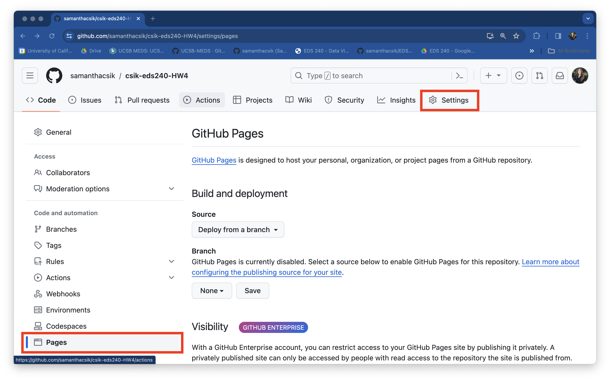

Important
TODO: revise assignment; add final Q about using genAI; update submission instructions to include upload to gradescope
Learning Outcomes
Your final assignment is meant to combine all of the course learning outcomes(!):
- identify which types of visualizations are most appropriate for your data and your audience
- prepare (e.g. clean, explore, wrangle) data so that it’s appropriately formatted for building data visualizations
- build effective, responsible, accessible, and aesthetically-pleasing visualizations using the R programming language, and specifically
{ggplot2}+ ggplot2 extension packages - write code from scratch and read and adapt code written by others
- apply a DEI (Diversity, Equity & Inclusion) lens to the process of designing data visualizations
- assess, critique, and provide constructive feedback on data visualizations
Description
Your final project consists of three parts. Please read all parts carefully:
1. Choose one of the following project options
OPTION 1: Infographic
Option 1 (infograpic) details
Build a cohesive infographic-style visualization that includes at least three different, but complementary visualizations that work together to tell a complete story. You should have one overarching question with (at least) three sub-questions which are addressed using each of the component pieces of the infographic.
Infographics are useful science communication pieces, which can serve a variety of audiences, but are particularly well-suited for engaging general audiences. An infographic typically exists to address one overarching question or idea, and it’s subcomponents (e.g. visualizations, numbers, imagery) each help to tell part of the story (or in other words, help to answer sub-questions). While text is important in all visualizations, it can be particularly critical in weaving together all of your infographic elements to successfully convey your story. The order and orientation in which your elements are positioned will also be essential for creating a visual hierarchy that successfully guides your readers.
All component visualizations must be produced using code (e.g. leveraging the {ggplot2} package), but you may assemble your final infographic using a tool(s) / software of your choice. It is possible to create your infographic entirely in R (you may consider using the {patchwork} package for stitching together different elements – see Ray Hunter’s infographic, or refer back to HW #1). You may also consider tools like Adobe Illustrator, Affinity, Canva, or Google Docs (there will be an optional class on Friday 02/07/2025 where you will learn how to use a number of these tools, led by Dr. Alex Phillips).
A few examples from Winter 2024 submissions:
- Who, What, Where?, by Luna Catalán (MEDS 2024)
- The World’s Largest Fishing Fleet, by Ray Hunter (MESM 2024)
- Invertebrate Investigations, by Sam Muir (MEDS 2024)
- Feeling Buzzed, by Melissa Widas (MEDS 2024)
- Are California Wildfires Truly Getting Worse?, by Amanda Herbst (MEDS 2024)
And a few more fun examples from other {ggplot2} creators:
- UFO Sightings, by Dan Oehm (from HW #1!)
- Numbats, by Dan Oehm
- Haunted Places, by Dan Oehm
- School Diversity, by Cédric Scherer
- Allons-y to Gallifrey, by Aman Bhargava
OPTION 2: Three viz, same question, different audiences
Option 2 (three viz) details
Build three separate visualizations, each to serve a different target audience / purpose. Each visualization should use the same data to answer the same question, but how you choose to present those data should change based on the following:
A visualization for technical writing / subject matter experts: The purpose of this visualization is to clearly communicate key insights, trends, or patterns, and is one that could be published in a technical report or academic paper. These types of visualizations may include more details and domain-specific language. They should, however, still prioritize clarity by finding ways to highlight the most important takeaway message(s). Two great examples are Michael Mann’s infamous “Hockey Stick” graph, and Figure 1 (Unusual climate anomalies in 2023) in Ripple et al. 2023.
A visualization for policy- or decision-makers: The purpose of this visualization is to balance clarity and insight with actionable and evidence-backed data to influence or inform policy decisions. A challenge is effectively communicating key insights, trends, forecasts, comparisons, etc. while remaining accessible to non-experts. These visuals often leverage clear, catchy titles, minimize potentially distracting design elements, present only the most essential data, and use text annotations to draw attention to key areas of a the graphic / help tell a story. A great example is Figure SPM.1(c) (Adverse impacts from human-caused climate change will continue to intensify) from the Intergovernmental Panel on Climate Change (IPCC)’s Climate Change 2023 Synthesis Report (see page 7).
A visualization for public outreach / a general audience: The purpose of this visualization is to raise awareness, prompt discussion, or otherwise engage an audience who may not have domain-specific knowledge or expertise. These types of visuals should limit (or fully omit) the use of any jargon. They may display findings in an atypical but creative way, as well as blend both art and science. A great (and famous) example is Ed Hawkins’ Warming Strips
OPTION 3: Propose an alternative project idea
Option 3 (propose an alternative) details
I want this assignment to serve you and your goals – if you’re not excited about Options 1 or 2, you may choose to propose an alternative idea. Please submit a brief (should not exceed 1 page) proposal at the time of your HW #1 submission. Your proposal must include / address:
- a clear description of your proposed project
- how you plan to incorporate at least three distinct data visualizations
- the intended audience(s) of your data visualizations
- any software or tools you’ll need to use and / or learn (beyond the necessary data wrangling / plotting packages, e.g.
{tidyverse}) - how this alternative project option serves your growth in the field of data visualization and communication
Please be aware that proposing an alternative project idea does not guarantee that it will be accepted as-is. You may be asked to modify your proposal to effectively meet EDS 240 final project requirements.
Regardless of which option you choose, you are expected to consider all design elements discussed throughout the quarter, implement as appropriate, and justify your decisions. These include, but are not limited to:
- graphic form (you are not limited to just those fundamental chart types discussed in weeks 2 & 4 – explore other chart types and don’t be afraid to get creative with it; check out some of these awesome data viz creators to find inspiration)
- text (e.g. titles, captions, annotations, axis labels, axis text)
- themes (i.e. all non-data plot elements; these should be intentionally modified and visually-pleasing)
- colors
- typography
- general design (e.g. group order, spacing, text orientation, data-ink ratio, creating a visual hierarchy, avoiding information overload)
- contextualizing your data
- centering your primary message
- considering accessibility (e.g. colorblind-friendly palettes / contrast, alt text)
- applying a DEI lens to your design, as appropriate (e.g. considering the people / communities / places represented in your data, consider how you frame your questions / issue)
2. Share your design process in a blog post-style write up
You will share your data design process and decisions in a short, 1-2 page (~500-1,000 words) science communication blog post-style write up. Your writing should be structured as follows:
Open with an engaging introduction paragraph(s), which states your motivation, question(s), data / data source(s), and goal(s) of your visualization. Be sure to review the EDS 296 materials on writing data science blog posts for tips on crafting a story and engaging your readers.
Embed / render your final data visualization product(s) (e.g. your full infographic, your three data visualizations, or your approved deliverable) following your introduction. If you are rendering your data viz product from code, be sure that:
- just the output renders and not the code (e.g. using code chunk options
eval: true&echo: false) - warnings and messages are suppressed, as necessary (e.g. using code chunk options
warning: false&message: false); other intermediate products should not be rendered - see the Quarto documentation on HTML Code Blocks and Execution Options for more
- just the output renders and not the code (e.g. using code chunk options
The body of your blog post should address your approach and decisions for each of the ten design elements listed above (though you are welcome and encouraged to comment on any others that are not explicitly listed). If your visualizations do not include or consider a listed element(s), please comment on why (it’s possible that not all ten elements will be applicable to your visualizations). You may choose to render and refer to individual / component data visualizations throughout the body of your blog post, as necessary or appropriate.
Include the all code used to generate your final data viz products in a foldable code chunk (folded by default; see code chunk option,
code-fold: true), at the end of your blog post. Be sure to include some written text beforehand that lets your readers know that they can explore the full code by expanding the chunk. Here, your code should:- print, but not execute (i.e. use code chunk options
eval: false&echo: true) - follow the tidyverse style guide (important styles are outlined on the course website)
- be appropriately organized and annotated (see these recommendations)
- print, but not execute (i.e. use code chunk options
You may submit your write-up in one of two ways:
As a blog post on your personal website – check out the Adding a blog to your existing Quarto website materials for a refresher, if needed
As a published Quarto document that is deployed using GitHub Pages. Expand the note below for detailed instructions on how to do so:
Instructions for publishing a Quarto doc using GitHub Pages
- Your Quarto doc must be named
index.qmdand live in your repository’s root directory. Be sure to rename / move it, if necessary. - Render
index.qmdand ensure thatindex.htmlappears in your root directory as well (this is the file that will be deployed by GitHub Pages). - Head to your remote repository on GitHub. Navigate to the Settings page (top navbar), then select Pages from the left-hand menu. Once there, you should see something that looks like this:
- Under Build and deployment > Branch, update the drop down that says None to main. Leave the second drop down on /(root) (this tells GitHub to look for and deploy our
index.htmlfile from the root directory of the main branch). Click Save. Your URL will appear at the top of the page once it’s deployed (you will need to refresh the page – this could take a few minutes):


Remember, this is an opportunity to grow your portfolio and showcase both your technical and communication skills (through data viz and writing). The more thought, organization, and care you put into this write-up, the more confident you can be showing this to a potential employer!
3. Present your data viz product to the class
Final project flash talks will take place in person during finals week. You will have 3 minutes to present your final data visualization(s). You may structure your presentation however you’d like, so long as you address the following:
The presentation format is flexible, but it should be something that can easily be shared with Sam and opened on her computer during the day of presentations.
IMPORTANT: You are expected to present in person
Make up presentations will not be permitted. Please plan accordingly!
Rubric (specifications)
You must complete sections 1, 2, and 3, as described above to receive a “Satisfactory” mark for Assignment #4. Please carefully review all assignment details before submitting! A few important self-checks: